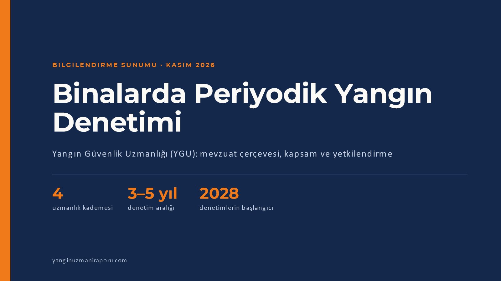

Binaların periyodik yangın kontrolünü Bakanlıkça yetkilendirilen uzmanlar yapacak. Mezuniyetinize uygun kademeyi öğrenin, mevzuatı takip edin ve eğitime hazır başlayın.

YGU Mevzuat Rehberi · 30 slaytİncele ↓Yangın güvenliği, yalnızca bir binanın ilk açılışında kontrol edilmesi gereken bir konu değil, kullanım süresi boyunca düzenli olarak denetlenmesi gereken hayati bir sorumluluktur.
Yangın güvenliği, özellikle Kartalkaya'da yaşanan elim yangın faciasının ardından ülkemizde çok daha önemli bir konu hâline gelmiştir. Bu kapsamda, 2007 tarihli Binaların Yangından Korunması Hakkında Yönetmelik'in yerini alacak yeni Bina Yangın Yönetmeliği 27 Kasım 2026 tarihli Resmî Gazete'de yayımlanmış olup 1 Ocak 2028'de yürürlüğe girecektir. Böylece yangın güvenliği denetimlerinde yeni bir dönem başlamaktadır.
Mevcut uygulamada; oteller, hastaneler, okullar, çok katlı mağazalar, alışveriş merkezleri, huzurevleri, özel eğitim kurumları ve yüksek binalar gibi belirli yapıların ruhsatlandırma süreçlerinde itfaiye teşkilatları tarafından yangın güvenliği tedbirleri kontrol edilmekte ve gerekli şartların sağlanması hâlinde itfaiye raporu düzenlenmektedir.
Ancak burada önemli bir husus bulunmaktadır: Yangın güvenliği kontrolleri çoğunlukla yapıların ilk ruhsatlandırma aşamasında gerçekleştirilmektedir. Oysa yangın güvenliği, yalnızca bir binanın ilk açılışında kontrol edilmesi gereken bir konu değil, kullanım süresi boyunca düzenli olarak denetlenmesi gereken hayati bir sorumluluktur.
Yangın uzmanlığı tam da bu noktada önem kazanmaktadır.
Yeni düzenlemeyle birlikte, kapsamı ve uygulama esasları yönetmelikle kesinleşmek üzere, iş yerleri ve binaların yangın güvenliği tedbirlerinin periyodik olarak denetlenmesi, eksikliklerin tespit edilmesi ve raporlanması konusunda yangın güvenliği uzmanlarına önemli görevler verilmesi öngörülmektedir.
Bu durum, yangın güvenliği alanında yeni bir mesleki faaliyet ve istihdam alanının oluşmasına zemin hazırlayabilir.
Biz de bu yeni döneme hazırlık kapsamında, yangın uzmanlığı alanında eğitim almak ve geleceğin mesleki fırsatlarını değerlendirmek isteyen adaylara yönelik eğitim faaliyetlerimizi planlıyoruz.
Yangın güvenlik uzmanlarına ilişkin usul ve esasları düzenleyecek yönetmelik yayımlandığında eğitim, yetkinlik, belgelendirme ve görevlendirme kriterleri kesin olarak belli olacak; tüm gelişmeler ve resmî şartlar doğrultusunda sizleri ayrıntılı şekilde bilgilendireceğiz.
Bu yeni sektörde ilklerden biri olmak, kendinizi geleceğin mesleki fırsatlarına hazırlamak istiyorsanız sayfamızı takipte kalın.
Gelişmelerden haberdar olmak ve eğitim süreci hakkında bilgi almak için bizimle iletişime geçebilirsiniz.
Geleceğin yangın güvenliği uzmanları arasında yerinizi almaya hazır olun!
Taslağın yayımından periyodik kontrolün başlamasına kadar sizi bekleyen kilometre taşları. Gelişmeler oldukça bu çizelgeyi güncelliyoruz.
Yeni Bina Yangın Yönetmeliği 27 Kasım 2026 tarihli Resmî Gazete'de yayımlandı ve 1 Ocak 2028'de yürürlüğe giriyor; uygunluk görüşü ve tatbikat hükümleri de bu tarihten itibaren uygulanacak. Kontrol süreleri, kademeler ve eğitim gibi YGU'ya ilişkin ayrıntılar Bakanlığın çıkaracağı ayrı yönetmelikle kesinleşecek.
Cumhurbaşkanı Kararı 12041 · Resmî Gazete 27.11.2026 / 33443 · Yürürlük: 1 Ocak 2028
Mevzuat çerçevesi, denetime tabi yapılar, uzmanlık kademeleri ve yetkilendirme süreci 30 slaytta. Oklarla veya küçük resimlerden gezinebilir, PDF olarak indirebilirsiniz.
Başlangıç kademenizi mezuniyetiniz belirler; deneyimle bir üst kademeye geçebilirsiniz.
| Kademe | Kimler başvurabilir? | Asgari eğitim | Görev alanı | Kariyerde sonraki adım |
|---|---|---|---|---|
| YGU-1Tekniker | Makine, inşaat, elektrik, elektrik-elektronik teknikerleri; itfaiyecilik ön lisans mezunları | 65 saat | 30,50–51,50 m konutlar, 25 oda ve altı oteller, 1.000 m² ve altı binalar, düşük tehlikeli tesislerin periyodik kontrolü | Mühendislik veya mimarlık lisansıyla YGU-2'ye başvurulabilir |
| YGU-2Mühendis · Mimar | Mimarlar; inşaat, makine, elektrik, elektronik, elektrik-elektronik mühendisleri | 85 saat | Eşik üstü binalar dahil periyodik kontrol; proje uygunluk ve iskân aşaması raporları; tatbikat planlaması | Bir yılda 2 farklı sınıfta 4 rapor → YGU-3 |
| YGU-3Kıdemli uzman | YGU-2 belgesi olup son bir yılda en az 2 farklı kullanım sınıfında en az 4 rapor düzenlemiş olanlar | +40 saat | YGU-2 yetkilerine ek olarak yüksek tehlikeli yapılar ve uluslararası standartlı binalar | En üst kademe |
| YGU-KKimya uzmanı | Kimya mühendisleri ve kimya lisans mezunları | 35 saat | Yüksek tehlikeli yapılarda tehlikeli maddelerin tespiti ve sınıflandırılması | YGU-3 ile birlikte ekip çalışması |
Ön lisans veya lisans programınızı seçin; taslağa göre başlangıç kademenizi, eğitim sürenizi ve görev alanınızı görün.
Sonuçlar taslak yönetmeliğin 4. maddesine dayanır ve bilgilendirme amaçlıdır.
Son yıllardaki büyük yangınlarda bilirkişi raporlarının ortaya koyduğu eksikliklere bir Yangın Güvenlik Uzmanının gözüyle bakıyoruz.
Sınav formatına alışın: soru sayısı, başarı notu, EK-1 kapsamı, görevlendirme ve etik kurallar. Her sorunun açıklamasıyla birlikte.
Deneme sınavını başlatiş birliğiyle YGU teorik eğitimi; yanında kontrol formu uygulaması, rapor yazımı ve deneme sınavlarıyla hazırlık programı.
Ön başvuru yapınKademenizi öğrenin, mevzuatı takip edin ve eğitim takvimi açıklandığında ilk bilgilendirilenlerden olun.